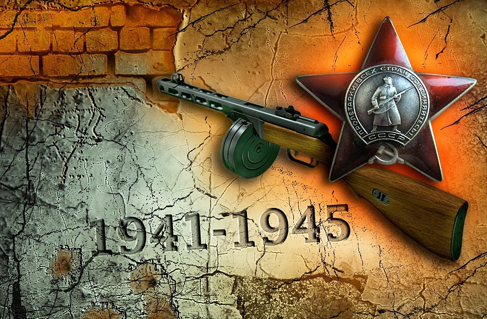

Великая Отечественная война

Великая Отечественная война (1941-1945 гг.) – война между СССР и Германией в рамках Второй Мировой войны,
закончившаяся победой Советского Союза над фашистами и взятием Берлина.
Великая Отечественная Война стала одним из финальных этапов Второй Мировой.
Причины Великой Отечественной Войны
После поражения в Первой Мировой войне, Германия осталась в крайне тяжелом экономическом и политическом положении,
однако, после прихода к власти Гитлера и проведения реформ, страна смогла нарастить свою военную мощь
и стабилизировать экономику.
Гитлер не принимал результатов Первой Мировой и хотел взять реванш,
тем самым приведя Германию к мировому господству.
В результате его военных походов, в 1939 году Германия вторглась в Польшу и затем Чехословакию.
Началась новая война.
Армия Гитлера стремительно завоевывала новые территории, однако до определенного момента между Германией и СССР
существовал мирный договор о ненападении, подписанный Гитлером и Сталиным.
Впрочем, спустя два года после начала Второй Мировой, Гитлер нарушил соглашение о ненападении – его командованием
был разработан план «Барбаросса», предполагающий стремительное нападение Германии на СССР и захват территорий в
течение двух месяцев.
В случае победы, Гитлер получал возможность начать войну с Соединенными Штатами, также ему открывался доступ к
новым территориям и торговым путям.
Вопреки ожиданиям, неожиданное нападение на Россию не дало результатов – русская армия оказалась оснащена гораздо
лучше, чем предполагал Гитлер и оказывала существенное сопротивление.
Компания, рассчитанная на несколько месяцев превратилась в затяжную войну,
которая позже получила название Великая Отечественная война.
Великая Отечественная война длилась с 22 июня 1941 года по 9 мая 1945 года.
Основные периоды Великой Отечественной войны
-
Начальный период войны (22 июня 1941 — 18 ноября 1942).
22 июня Германия вторглась на территорию СССР и к концу года смогла завоевать Литву, Латвию, Эстонию, Украину,
Молдавию и Белоруссию – войска двинулись вглубь страны, чтобы захватить Москву.
Российские войска терпели огромные потери, жители страны на захваченных территориях оказались в немецком плену
и были угнаны в Германию в рабство. Однако, несмотря на то, что советская армия проигрывала,
ей все же удалось остановить немцев на подходе к Ленинграду (город был взят в блокаду), Москве и Новгороду.
План «Барбаросса» не дал желаемых результатов, битвы за эти города продолжались вплоть до 1942 года.
-
Период коренного перелома (1942-1943 гг.) 19 ноября 1942 года началось контрнаступление советских войск,
которое дало существенные результаты – одна немецкая и четыре союзных армии были уничтожены.
Советская армия продолжала наступление по всем направления, им удалось разгромить несколько армий,
начать преследование немцев и отодвинуть границу фронта обратно в сторону запада.
Благодаря наращиванию военных ресурсов (военная промышленность работала в особом режиме)
советская армия существенно превосходила немецкую и могла теперь не только оказывать сопротивление,
но и диктовать свои условия в войне. Из обороняющейся армия СССР превратилась в нападающую.
-
Третий период войны (1943-1945 гг.). Несмотря на то, что Германии удалось существенно нарастить мощь своей
армии, она все еще уступала советской, и СССР продолжал играть ведущую наступательную роль в военных
действиях. Советская армия продолжала продвигаться в сторону Берлина, отвоевывая захваченные территории.
Был отвоеван Ленинград, и к 1944 году советские войска двинулись в сторону Польши, а затем и Германии.
8 мая Берлин был взят, а немецкие войска объявили безоговорочную капитуляцию.
Основные сражение Великой Отечественной войны
Итоги и значение Великой Отечественной войны
Основное значение Великой Отечественной войны
Основное значение Великой Отечественной войны состояло в том, что она окончательно сломила немецкую армию,
не давая Гитлеру возможности дальше продолжать свою борьбу за мировое господство.
Война стала переломным моментов в ходе Второй Мировой и, фактически, ее завершением.
Однако победа далась СССР тяжело.
Однако победа далась СССР тяжело.
Экономика страны на протяжении войны находилась в особом режиме, заводы работали, в основном,
на военную промышленность, поэтому после войны пришлось столкнуться с тяжелейшим кризисом.
Многие заводы были разрушены, большая часть мужского населения погибла, люди голодали и не могли работать.
Страна находилась в тяжелейшем состоянии, и ей потребовалось немало лет на то, чтобы восстановиться.
Союз стал одним из самых крупных и влиятельных государств
Но, несмотря на то, что СССР находился в глубоком кризисе, страна превратилась в сверхдержаву,
резко возросло ее политическое влияние на мировой арене,
Союз стал одним из самых крупных и влиятельных государств, наравне с США и Великобританией.
Узнать больше о Великой Отечественной войне